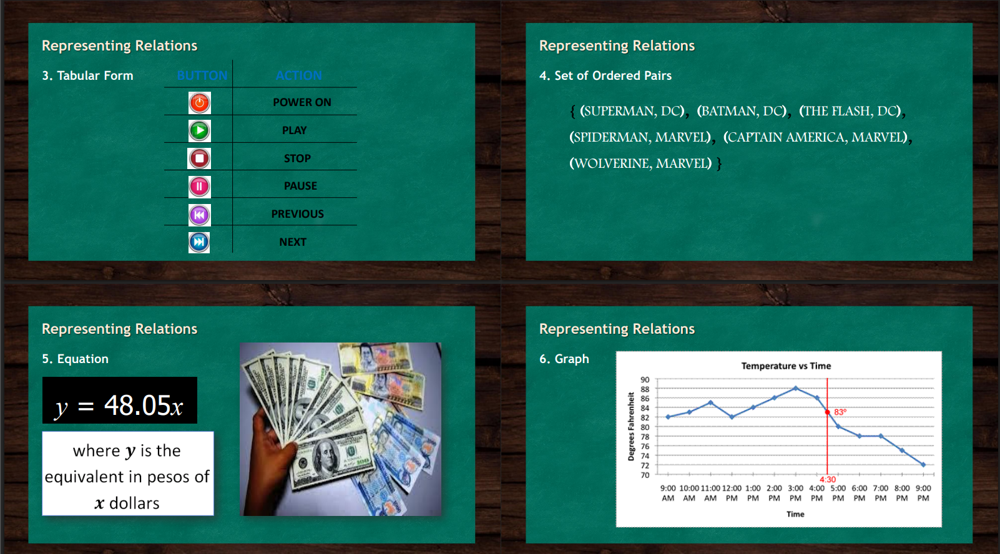

The slides talk about relations in a simple, everyday way. A relation is basically a connection between two sets of things. It’s like saying, this thing is linked to that thing. There are many ways to show these connections you can describe them in words, draw them in a diagram, put them in a table, list them as ordered pairs, write an equation, or even graph them. One way is through a descriptive rule, which is just explaining the relationship in a sentence. For example: A student in this Grade 11 class is assigned to the teachers they had last year. Here, the connection is clearly stated without using numbers or diagrams. Another way is a mapping diagram, which is more visual. Imagine you have superhero names on one side and their real identities on the other. Lines connect each superhero to their real name like Spider-Man to Peter Parker, Superman to Clark Kent, and so on. It’s like making a matching game, so you can easily see who’s connected to who.

The slides show two more ways to represent relations tabular form and set of ordered pairs. In the tabular form, the relationship is shown in a table with two columns. One column lists the button symbols (like power, play, stop, pause, previous, and next), and the other column lists the actions each button performs. This makes it easy to quickly see which button corresponds to which action, much like looking at a quick reference guide. The set of ordered pairs method lists the relation as pairs of elements inside curly brackets. The first item in each pair comes from one set, and the second item comes from another set. For example, (Superman, DC) means Superman belongs to DC Comics, while (Spider-Man, Marvel) means Spider-Man belongs to Marvel. This style is more mathematical and is often used when dealing with data in math problems or computer programming.
The last slides show two more ways we can represent relations equations and graphs but in a way that feels more real-life. With the equation example, we see how math can describe something practical, like converting money. The formula y = 48.05x simply says: take the number of dollars (x) and multiply it by 48.05 to get the amount in pesos (y). So, if you know how much you have in dollars, you can instantly figure out its value in pesos. The picture of pesos and dollars makes it clear what the equation is about. The graph example turns data into a picture. Here, it’s showing how the temperature changes throughout the day. Time runs along the bottom, and the temperature is on the side. Each point shows the temperature at a certain time, and when you connect them, you can see the ups and downs during the day. There’s even a highlight at 4:30 PM when the temperature was exactly 83°F making it easy to spot important moments without digging through numbers.